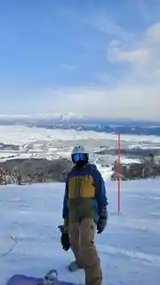
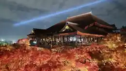

物語の始まり
広東語文化、食、家族とのつながりは、今でも自分の感覚の基準の一つです。長く海外で暮らしても、華南に戻る感覚は「旅行」とは少し違います。
Life & Travel
広東で生まれ、香港で成長し、今は東京を生活の拠点にしています。それぞれの場所が、街、食、言語、そして「どこに属するか」という感覚に影響を与えてきました。私にとって旅は、目的地を集めることより、人がどう暮らしているかを見ることに近いです。
Places that shaped me
広東語文化、食、家族とのつながりは、今でも自分の感覚の基準の一つです。長く海外で暮らしても、華南に戻る感覚は「旅行」とは少し違います。
学生時代から社会人初期までを香港で過ごしました。家族、昔からの友人、密度の高い街並み、遅い時間の食事。戻るとすぐに身体が街のリズムを思い出します。
駅の動線、小さな飲食店の設計、季節ごとの食、住宅街の静けさ。東京は、派手な名所だけでなく、日常を支える細かな仕組みに気づくほど面白くなる街だと思います。
Featured experience
2026年6月、富良野に14泊15日滞在し、普段のリモートワークを続けながら北海道の暮らしを体験しました。平日は富良野を拠点に働き、休日には網走・知床・阿寒湖方面まで足を延ばし、自然、食、地域との交流や植樹活動を通じて、短期旅行とは違う「暮らすように旅する」時間を過ごしました。

Travel notes
冬の旅はスノーボードがきっかけになることが多いですが、ローカル線、山間の町、寒い日の温かい食事など、行き帰りも旅の一部です。
香川の讃岐うどん、地元の居酒屋、海沿いの魚。地域の食は、その土地の記憶を最も簡単に残してくれます。
花火大会や季節の行事は、大都市だけを旅行していると見えにくい日本のリズムを感じさせてくれます。
自転車では距離が身体感覚になります。海岸線が一本につながり、電車なら通り過ぎる町も旅の一部になります。

Languages & perspective
広東語、中国語、英語、日本語は、それぞれ違う時期と場所につながっています。言語を切り替えることは、単に話し方を変えるだけでなく、何に気づくかを変えることでもあります。